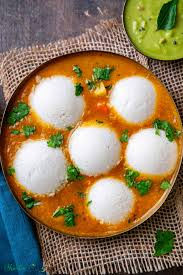
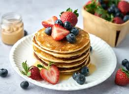
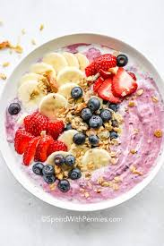

Start your day with these delicious breakfast ideas!

Try our amazing 1. Idly Sambar Recipe Ingredients (for Idly): 2 cups idli rice 1 cup urad dal (split black gram) Salt to taste Water as needed Instructions (Idly): Rinse and soak the rice and urad dal separately for 6 hours. Grind urad dal into a smooth batter, adding water as needed. Grind the rice coarsely. Mix both batters, add salt, and let the mixture ferment for 8-10 hours. Pour the batter into idly molds and steam for 10-12 minutes until fluffy. Ingredients (for Sambar): 1 cup toor dal (pigeon peas) 1 tbsp tamarind paste 1 medium onion, diced 1 medium tomato, chopped 2-3 green chilies, slit 1 tsp mustard seeds 1 tsp cumin seeds 1 tsp turmeric powder 2 tsp sambar powder 10-12 curry leaves 1 tsp asafoetida (hing) Fresh coriander for garnish Oil for tempering Salt to taste Instructions (Sambar): Cook toor dal with water and turmeric until soft. Mash and set aside. Heat oil in a pan, add mustard and cumin seeds. Let them splutter. Add curry leaves, asafoetida, onions, and green chilies. Sauté until onions are soft. Add tomatoes and cook until mushy. Mix in the tamarind paste, sambar powder, salt, and cooked dal. Simmer for 10 minutes. Garnish with fresh coriander and serve with idly. perfect for breakfast!

2. Pancake Recipe Ingredients: 1 cup all-purpose flour 2 tbsp sugar 1 tsp baking powder 1/2 tsp baking soda 1/4 tsp salt 3/4 cup milk 1 large egg 2 tbsp melted butter 1 tsp vanilla extract Butter for cooking Instructions: In a bowl, mix the flour, sugar, baking powder, baking soda, and salt. In another bowl, whisk together milk, egg, melted butter, and vanilla extract. Add the wet ingredients to the dry ingredients and gently mix until just combined (lumps are fine). Heat a non-stick skillet or griddle over medium heat. Grease lightly with butter. Pour 1/4 cup of batter onto the skillet. Cook until bubbles form on the surface, then flip and cook for another minute or until golden brown. Serve warm with maple syrup, fruits, or any toppings you like.
Try our amazing 3. Omelette with Cheddar Cheese and Fresh Herbs Recipe Ingredients: 3 large eggs 1/4 cup shredded cheddar cheese 1 tbsp chopped fresh herbs (such as parsley, chives, or dill) 1 tbsp butter Salt and pepper to taste Instructions: Crack the eggs into a bowl, add salt and pepper, and whisk until the mixture is smooth. Heat a non-stick pan over medium heat and add butter. Once the butter melts, pour in the eggs and swirl the pan so the eggs cover the surface. As the eggs begin to set, sprinkle the cheese and fresh herbs over one half of the omelette. When the omelette is mostly set but still a little soft in the center, fold it in half. Cook for another 30 seconds, then slide it onto a plate. Serve hot. perfect for breakfast!

A refreshing smoothie bowl topped with fresh berries and granola.4. Smoothie Bowl Topped with Fresh Berries and Granola Ingredients: 1 frozen banana 1/2 cup frozen berries (like blueberries or strawberries) 1/2 cup Greek yogurt 1/4 cup almond milk or any milk of choice 1 tsp honey or maple syrup (optional) Fresh berries (blueberries, strawberries, raspberries) for topping 1/4 cup granola 1 tbsp chia seeds (optional) Fresh mint for garnish (optional) Instructions: In a blender, combine the frozen banana, frozen berries, Greek yogurt, and almond milk. Blend until smooth. Pour the smoothie mixture into a bowl. Top the smoothie with fresh berries, granola, chia seeds, and a drizzle of honey (if using). Garnish with fresh mint and enjoy immediately.